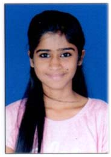
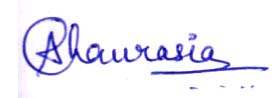

|  | |
| Bio | |
| Real Name | Akansha Chhagan Chaurasia |
| Profession | Model, BeautyPageant TitleHolder |
| Physical Stats & More | |
|---|---|
| Height(approx.) |
in centimeters-167 cm
in meters-1.67m in feet inches-5'6" |
| Weight(approx.) | in Kilograms-55 kg
in Pounds-121 lbs |
| Figure Measurements (approx.) |
34-26-34 |
| Eye Colour | Brown |
| Hair Colour | Black |
| Personal Life | |
| Date of Birth | 1 July 2001 |
| Age(as in 2022) | 21 years |
| Birth Place | Vikhroli, Maharashtra, India |
| Zodiac sign/Sun sign |
Cancer |
| Signature |  |
| Nationality | Indian |
| Hometown | Dombivli, Maharashtra, India |
| School | Model English School, Dombivli |
| College | Ramrao adik Institute of Technology, Navi Mumbai |
| Educational Qualification |
Pursuing Engineering |
| Family | Father-Chhagan Rajaram Chaurasia(ShareBroker) Mother-Jyotsna Chaurasia(Homemaker) Brother-Sahil Chaurasia Sister-None |
| Religion | Hindu |
| Caste | Hindu |
| Hobbies | Painting, Travelling, Reading, Dancing |
| Favourite Things | |
| Favourite Actors | Kartik Aaryan, Ranveer Singh |
| Favourite Actress | Kriti Sanon |
| Favourite Model | Reita Faria |
| Favourite Politician |
Narendra Modi |
| Favourite Quote | "There is nothing you cannot do. There is nothing you cannot be There is nothing you cannot have If you have it here, you can hold it in your hands" |
| Boys, Affairs and More | |
| Marital Status | Unmarried |
| Affairs/Boyfriends | Not Known |
| Husband/Spouse | N/A |